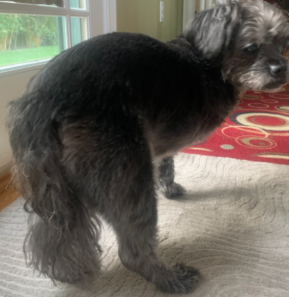
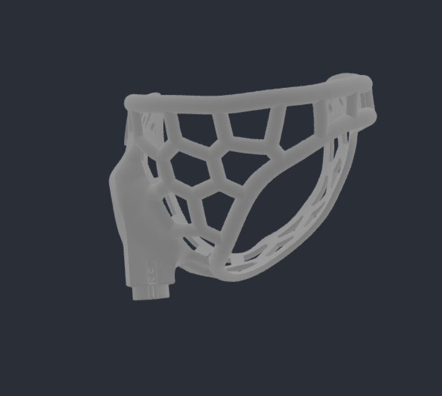
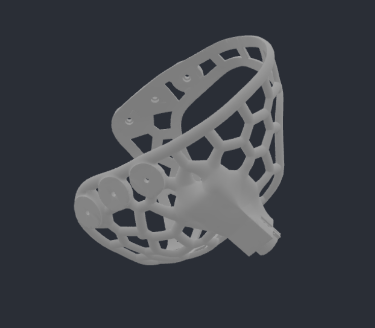
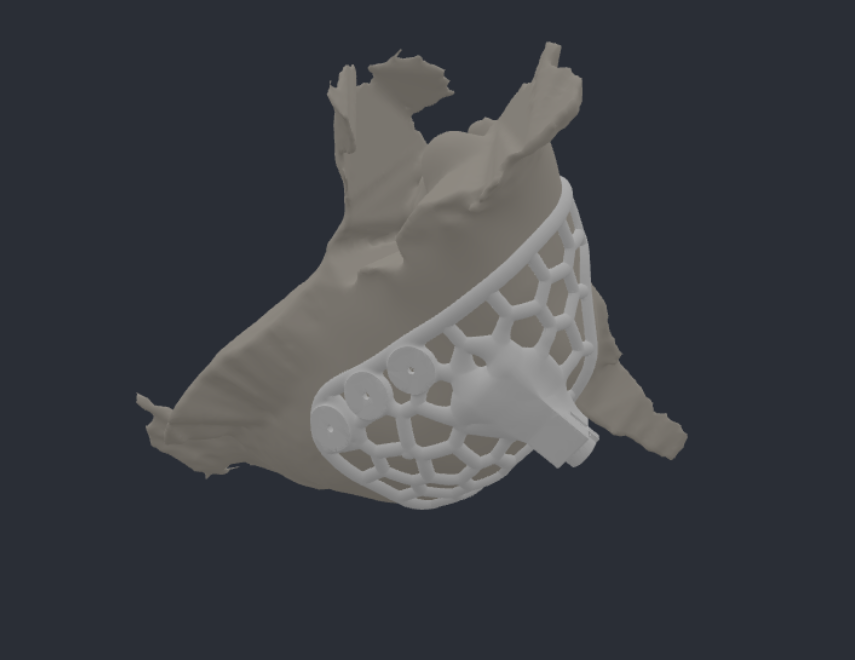
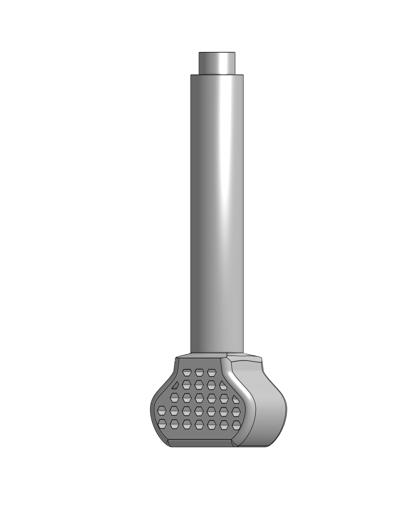

BioPrinting @ Berkeley · Design Engineer · Jan 2026 – Jun 2026
Canine Thoracic Limb Prosthesis
A fitted prototype, validated on Ollie and reshaped through four owner-driven fitting changes.





The problem
Most prosthetic solutions aren’t built around the specific animal wearing them. We designed a custom leg for Ollie, a 10-year-old, 12 lb dog who lost his entire right front limb, including the scapula, to a mast cell tumor four years earlier. A small, senior dog with an old full-limb amputation has very different needs from a typical prosthetic candidate.
Starting from a conversation
Before any CAD, we interviewed Ollie’s owner about his age, weight, amputation type, and years since surgery. That surfaced what a generic design would miss: after nearly half his life on three legs, comfort and gradual adaptation mattered as much as raw function. Three goals came straight out of that talk:
- Lightweight. Under about 10% of body weight (~1 lb) so it wouldn’t hinder him.
- Stable. A wide chest contact area to make up for the missing scapula.
- Supportive. Taking load off his remaining front limb, which already carries roughly 60% of his weight.
Design & materials
I designed the leg in SolidWorks and ran FEA to find stress concentrations under load. The materials came out as a hollow carbon fiber and PVC core for a light, strong structure; a flexible TPU foot with a 20-30% honeycomb infill for grip, shock absorption, and a natural gait bounce; a TPU-and-Velcro harness sized to wrap a large area of the body since there was no residual limb to anchor to; and an EVA foam lining for comfort. We prototyped in PETG to conserve TPU stock, with the final version planned in full TPU. Mid-project presentation check-ins were where we pressure-tested those material choices.
Iterating through a fitting
We brought a prototype in for a first fitting directly on Ollie, and his and his owner’s real-time reactions drove the next pass:
- Reduced gaps in the harness for a more comfortable fit
- Reshaped the leg opening to be smoother and more circular to prevent chafing
- Resized the attachment point and cut the core tube to the right height (~14.5 cm)
- Widened the Velcro holes and the foot base for stability
How it turned out
A fitted, functional prototype validated on Ollie himself and refined through direct owner input at every stage (needs assessment, material selection, and fitting) rather than assumptions.